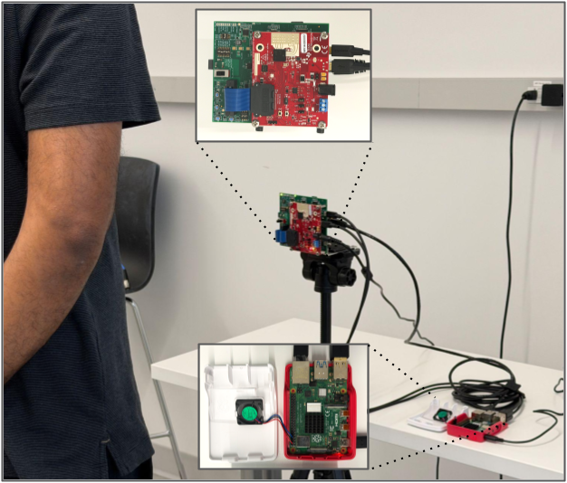

This page will be updated after ACM MobiCom 2026.
We present mmFHE, the first system that executes the entire cloud-side mmWave sensing pipeline including the DSP and ML inference under fully homomorphic encryption (FHE). mmFHE encrypts range profiles on an edge device after lightweight plaintext preprocessing and executes the entire mmWave signal-processing and ML inference pipeline homomorphically on a semi-honest cloud that operates exclusively on ciphertexts. At the core of mmFHE is a library of seven composable, data-oblivious FHE kernels that replace standard DSP routines with fixed arithmetic circuits for different application-specific pipelines. We demonstrate this approach on two representative tasks: vital-sign monitoring and gesture recognition. We formally prove two cryptographic guarantees for any pipeline assembled from this library: input privacy and data obliviousness. These guarantees effectively neutralize various supervised and unsupervised privacy attacks on raw data, including re-identification and data-dependent privacy leakage. Evaluation on three public radar datasets shows that encryption introduces negligible error versus the plaintext pipeline, with 84.5% gesture accuracy (vs. 84.7%). End-to-end cloud GPU latency is 1.21 s per 10 s vital-sign window and 5.76 s per 3 s gesture window. These results establish the initial feasibility of end-to-end mmWave sensing under FHE on commodity hardware.

@inproceedings{10.1145/3795866.3844486,
author = {Ahmed, Tanvir and Gao, Yixuan and Armouti, Adnan and Nandakumar, Rajalakshmi},
title = {{mmFHE}: {mmWave} Sensing with End-to-End Fully Homomorphic Encryption},
year = {2026},
month = oct,
publisher = {Association for Computing Machinery},
address = {New York, NY, USA},
url = {https://doi.org/10.1145/3795866.3844486},
doi = {10.1145/3795866.3844486},
booktitle = {The 32nd Annual International Conference on Mobile Computing and Networking},
numpages = {17},
location = {Austin, TX, USA},
series = {MobiCom '26}
}